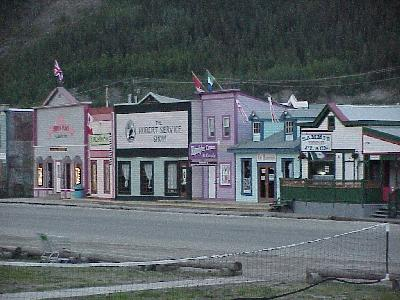
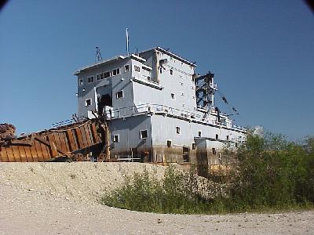
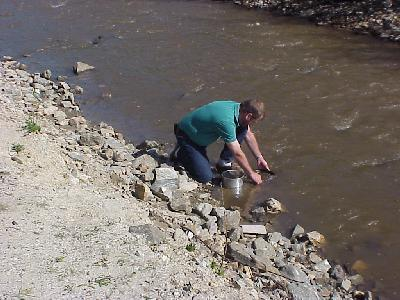
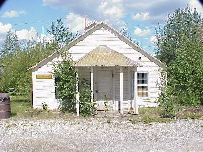
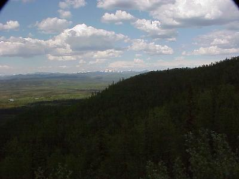
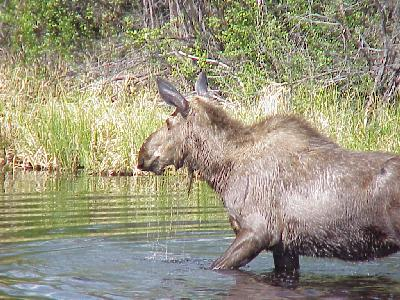

June 10, 6759 miles
| Up early for a day that will be half sight seeing and half travel. We will be touring more of the area around Dawson City before starting on our way south towards Whitehorse. | |
| On the list of activities for the day was a walking tour of the downtown old Dawson City. Many of the store fronts are decorated as they were back in the Dawson City Gold Rush days. This picture was actually taken last night, or early this morning if you will, at about 1:30AM! |  |
| We also toured Gold Dredge #4, which is being
restored by the Parks Canada. Gold Dredge #4 (and some of
its brothers) actually have some Ohio heritage, being
manufactured in Marion, Ohio, by Marion Power Shovel -
then shipped by various rail, steam ship, and horse drawn
means to the site and assembled. This is the largest
wooden hulled bucket-line dredge ever built in North
America. The interpretive guide from Parks Canada kept talking about this piece of equipment, manufactured in Ohio, as one of the major icons of Canada's entry into the industrial revolution. |
 |
| Of course you cannot even think of coming to this
area without doing a little prospecting yourself. No - I didn't hit the mother lode, I will be returning to work. |
 |
| Gold Dredge #4, and about 10 other dredges active in
the area, had a large staff of people to keep them
running (when operating Gold Dredge #4 had a crew of only
4 people on board), count the gold, and all that. Those
people were at the Bear Creek Compound, that we also
toured. At its peak there were some 3000 people living in
and around Bear Creek to keep the dredges active. One of the buildings did catch my eye, this is the mine engineer's house - quite contemporary - aye. |
 |
| We could not have asked for a better day. Another mid 70's day, lots of sun, nice breeze - most of the time. The views as we got on our way were stunning. |  |
| Just for Michele: M O O S E On our way out of Dawson City we ran across this moose, just waiting to have his (or her, we didn't ask) picture taken. We even turned around and went back - still there - just waiting for his picture to be taken. |
 |
| We pulled into the campgrounds, at 7:00
after traveling 207 miles. Nice quiet campground on the
banks of the Yukon River. The only problem with the nice
weather is the mosquitos are starting to get a little
thicker, but still bareable with the light breeze. Wildlife for the day included: moose (1); black bear (1); and beaver (1). |
|